toyon
Heteromeles arbutifolia
Member of
rose family (family Rosaceae)
dicots (class Magnoliopsida)
other colors in flowering plants
There are no other wild species of this genus in California.
 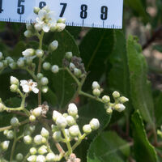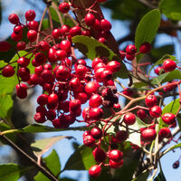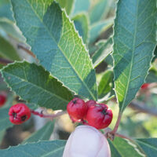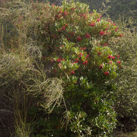
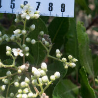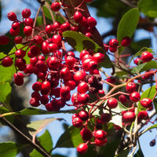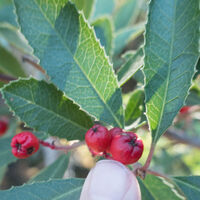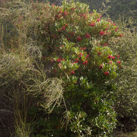
See also cotoneasters (genus Cotoneaster).
Edibility: The berries have a pungent and bitter taste when raw; they taste better after being cooked [source].
Toxicity:
leaves of christmas berry, photinia arbutifolia, toyon (Photinia arbutifolia):
4 – Ingestion of these plants, especially in large amounts, is expected to cause serious effects to the heart, liver, kidneys or brain. If ingested in any amount, call the poison center immediately.
Chris’s observations: 84 (82 are research grade)
Locations:
- Quicksilver CP: 10
- Edgewood Park & Natural Preserve: 9
- Castle Rock SP: 5
- Sierra Azul OSP: 5
- Skyline Ridge OSP: 5
- Henry Coe SP: 4
- Rancho Cañada del Oro OSP: 3
- San Pedro Valley CP: 3
- Ulistac Natural Area, Santa Clara: 3
- Waterdog Lake & Open Space: 3
- Coyote Lake / Harvey Bear Ranch CP: 2
- Foothills Nature Preserve, Palo Alto: 2
- Fremont Older OSP: 2
- Huckleberry Botanic RP: 2
- Monte Bello OSP: 2
- Monterey County: 2
- Mt. Madonna SP: 2
- Sierra Vista OSP: 2
- Butano SP
- Calero CP
- Coal Creek OSP
- Coal Mine Ridge Nature Preserve
- Coyote Hills RP
- Cupertino, CA
- Don Edwards National Wildlife Refuge
- Ed Levin CP
- El Sereno OSP
- Golden Gate National Recreation Area
- Lake Chabot RP
- Picchetti Ranch OSP
- Rancho San Antonio OSP
- Sam McDonald CP
- Sanborn CP
- Stevens Creek CP
- Sweeney Ridge National Recreation Area
- Wunderlich CP
Months:
- Jan.: 12
- Feb.: 8
- Mar.: 7
- Apr.: 4
- May: 3
- Jun.: 9
- Jul.: 10
- Aug.: 5
- Sep.: 5
- Oct.: 2
- Nov.: 10
- Dec.: 9
For more details, use advanced search.
Taxon info:
iNaturalist
–
Calflora
–
CalPhotos
–
Jepson eFlora
–
FNA
Bay Area species:
iNaturalist
–
Calflora
 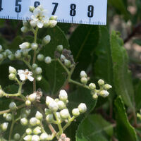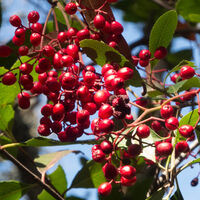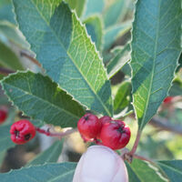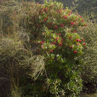
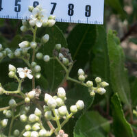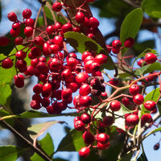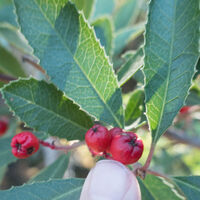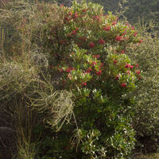
{kind=link}
{kind=link}
{kind=link}
{kind=link}
{kind=link}